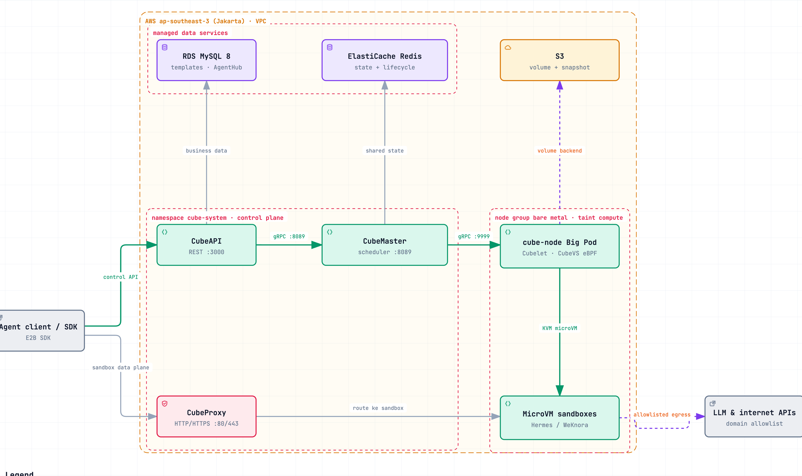

17 Nov 2026 · html
CubeSandbox di EKS Jakarta
Riset arsitektur dan dependency CubeSandbox untuk deployment di Amazon EKS Jakarta: bare metal vs PVM, ketersediaan komponen di ap-southeast-3, biaya, dan catatan risiko.
On this page · sections
Jawaban singkatApa itu CubeSandboxArsitektur di EKS JakartaKenapa compute node harus bare metalDependency dan ketersediaan di JakartaPerkiraan biayaCara pakaiBuat Hermes dan WeKnoraRisiko yang harus diakuiLangkah berikutnyaSourcesOther copies of this page: English · Sandbox options · Diagram.
Catatan riset, 17 November 2026. Semua angka harga dan ketersediaan region diambil dari price list resmi AWS untuk ap-southeast-3 pada tanggal yang sama.
Jawaban singkat
Bisa jalan di EKS Jakarta, dan dependency utamanya sudah tersedia di region ini.24, 25 Tiga hal yang menentukan bentuk arsitekturnya:
1. Compute node harus bare metal, karena CubeSandbox butuh KVM asli di /dev/kvm.16, 18
2. Image-nya masih dari registry Tencent, jadi harus di-mirror ke ECR Jakarta.1
3. Jalur Kubernetes-nya resmi berstatus preview.11
Buat use case "sandbox sebagai agent infrastructure", modelnya cocok: sandbox memang dirancang untuk menjalankan proses agent yang hidup lama, bukan cuma eksekusi kode sekali jalan.14, 19 Tapi untuk Hermes dan WeKnora, jalur yang masuk akal adalah SDK E2B-compatible plus template sendiri, bukan fitur AgentHub.5, 30
Apa itu CubeSandbox
CubeSandbox adalah sandbox service berbasis MicroVM yang dibangun di atas RustVMM dan KVM, dengan klaim cold start di bawah 60ms dan overhead memori di bawah 5MB per sandbox.20, 19 Setiap sandbox dapat kernel sendiri, jadi tidak ada permukaan escape seperti container yang berbagi kernel host.19 Lisensinya Apache-2.0, versi terakhir v0.8.0 (12 November 2026), dan intinya sudah dipakai di produksi Tencent Cloud sebelum di-open-source.20, 9, 14
Yang penting untuk kita: API-nya kompatibel dengan E2B SDK, jadi kode agent yang sudah pakai E2B cukup ganti URL endpoint.20, 30
Komponennya terbagi dua lapis.19
Control plane (stateless, semua state di Redis):
CubeAPI, REST gateway kompatibel E2B di port 3000.16, 30CubeMaster, penjadwal klaster dan pemegang metadata, port 8089.19, 17CubeOps, backend ops dan WebUI, port 3010.17CubeProxy, reverse proxy HTTP/HTTPS di port 80/443 yang mengarahkan trafik ke sandbox yang tepat.19, 17cube-lifecycle-manager, menangani pause dan resume, default 2 replika dengan leader election.17
Data plane (per node):
Cubeletdi port 9999, mengelola siklus hidup sandbox di satu node.19, 18CubeShim, implementasi containerd Shim v2 yang menjembatani runtime ke MicroVM.19CubeHypervisor, VMM berbasis RustVMM dan KVM.19CubeVS, virtual switch eBPF dengan tiga program TC untuk SNAT, DNAT, dan policy.19CubeEgress, proxy keluar L7 berbasis OpenResty, dengan filter domain, injeksi kredensial, dan audit.19, 12CubeCoW, mesin copy-on-write yang memakai ioctlFICLONEuntuk snapshot dan clone O(1).19, 7
Arsitektur di EKS Jakarta
Pola deploy yang gw usulkan: satu klaster EKS di ap-southeast-3, namespace cube-system, control plane sebagai Deployment biasa, compute plane sebagai DaemonSet di node group khusus bare metal yang di-taint.15, 17
Beberapa detail yang menentukan desainnya:
- Compute node di-taint
cube.tencent.com/compute=true:NoSchedule, dancube-nodejalan di host network secara default.16, 17 cube-nodeitu privileged dan hostPath, jadi salah penjadwalan mahal harganya.17, 18- Data disk di
/data/cubeletwajib XFS karena CoW-nya butuh reflink.16, 7 Kalau tidak disediakan, chart membuat loopback image 25 GB secara default.16, 18 - CIDR internal sandbox default
172.16.0.0/18tidak boleh overlap dengan Service CIDR klaster, dan ada preflight hook yang fail-fast kalau bentrok.1, 17 - MySQL, Redis, dan MinIO bisa dibawa sendiri oleh chart sebagai StatefulSet, atau diarahkan ke service managed lewat
mysql.host,redis.host, danvolumeS3.*.17, 1

Kenapa compute node harus bare metal
Ini bagian yang paling menentukan biaya dan operasional. Bootstrap CubeSandbox memvalidasi /dev/kvm, dan dokumennya eksplisit: mesin fisik butuh VT-x atau AMD-V yang aktif, sementara cloud VM perlu PVM.18
PVM itu framework nested virtualization berbasis page table, dan cara instalasinya adalah menukar kernel host dengan kernel OpenCloudOS kvm_pvm, menambah boot args nopti pti=off, lalu reboot node.16, 1 Proses itu menyentuh GRUB, udev, dan fstab, dan uninstall Helm tidak mengembalikannya.18, 17 Di EKS managed node group, kernel swap seperti itu tidak realistis karena AMI-nya dikelola AWS.
Jadi pilihannya ada dua: node group bare metal, atau instance yang mendukung nested virtualization secara resmi.
AWS mendukung nested virtualization di keluarga M7i, C7i, R7i, I7i, dan I7ie, diaktifkan lewat opsi CPU saat launch.22 Tapi AWS sendiri menyarankan bare metal untuk workload yang sensitif terhadap performa dan latency, dan seluruh klaim CubeSandbox memang soal latency sub-100ms.22, 19 Ditambah lagi, jalur non-bare-metal di chart otomatis diasumsikan memakai PVM.16 Buat gw ini bukan jalur produksi, paling banter bahan eksperimen.
Yang tersedia di Jakarta dan relevan:24
c7i.metal-24xlsekitar $4,94 per jam, 96 vCPU.m5.metalsekitar $5,76 per jam.m7i.metal-24xlsekitar $6,05 per jam.m6i.metalsekitar $7,68 per jam.i7i.metal-24xlsekitar $10,86 per jam, dengan NVMe lokal.i4i.metalsekitar $13,17 per jam.
Catatan operasional yang sering kelewat: bare metal tidak bisa stop lalu start, hanya reboot, dan tidak mendukung hibernation.24 Jadi elastsitasnya beda kelas dibanding instance biasa, menskalakan compute berarti menyiapkan host 96 vCPU baru.
Dependency dan ketersediaan di Jakarta
Di host compute: KVM, kernel module, XFS dengan reflink, cgroup v2, bpffs, glibc 2.31 atau lebih baru, dan akses root atau privileged.1, 7 Arsitektur yang didukung x86_64 dan ARM64, tapi jalur PVM hanya x86_64.7
Service internal: MySQL 8, Redis 7, dan object storage S3-compatible untuk volume dan artifact, semuanya bisa dibawa chart atau diganti service managed.17, 1 JuiceFS opsional, statusnya preview, dan butuh FUSE di setiap node plus metadata store dan object store yang sama.9
Padanan managed di Jakarta: EKS dan S3 punya price list region ap-southeast-3.25, 27 ElastiCache dan ECR juga tersedia di region yang sama.26, 28 EBS gp3, NAT Gateway, dan ELB ikut tercatat di sana.24, 29 Jadi MySQL ke RDS, Redis ke ElastiCache, dan MinIO ke S3 itu jalur yang tersedia di region ini.
Yang tidak otomatis ada: image CubeSandbox ditarik dari cube-sandbox-int.tencentcloudcr.com.1 Ini bukan dependency AWS, dan tarikan lintas negara akan lama sekaligus mahal, jadi mirror ke ECR Jakarta harus dihitung sebagai langkah instalasi, bukan opsional.28
Runtime eksternal: sandbox butuh domain untuk pola URL <port>-<sandboxId>.<domain>, default cube.app, dan kliennya harus bisa resolve wildcard DNS.16, 17 Kalau tidak mau mengurus wildcard, ada mode path dan mode header E2B. Untuk egress, default allow_internet_access itu true, dan aturan L7 di CubeEgress bersifat default-deny untuk trafik yang lewat proxy.12 Jadi allowlist domain untuk LLM API dan API lain itu pekerjaan konfigurasi, bukan sesuatu yang otomatis aman.
Perkiraan biaya
Harga on-demand Linux, Shared tenancy, region Jakarta, tanpa pajak. Compute metal adalah pos yang mendominasi.
Skenario evaluasi, 1 compute metal:24, 25
- EKS control plane: $73 per bulan.
- Node control
m7i.xlarge: $184 per bulan. - Compute
c7i.metal-24xl: $3.606 per bulan. - EBS gp3 260 GB: $25 per bulan.
- NAT gateway plus 50 GB: $46 per bulan.
- S3 100 GB plus ECR 30 GB: $6 per bulan.
- Total sekitar $3.900 per bulan.
Skenario produksi kecil, 2 compute metal dan control plane HA:24, 25
- EKS control plane: $73 per bulan.
- 3 node control
m7i.2xlarge: $1.104 per bulan. - 2 compute
c7i.metal-24xl: $7.211 per bulan. - EBS gp3 1,3 TB: $125 per bulan.
- ElastiCache Valkey
cache.r7g.largeplus replika: $307 per bulan. - NAT, NLB, S3 1 TB, ECR 100 GB: $127 per bulan.
- Total sekitar $8.950 per bulan, belum termasuk RDS MySQL.
Angka EKS $0,10 per jam per klaster, gp3 $0,096 per GB-bulan, dan S3 Standard $0,025 per GB-bulan itu sama dengan region lain, jadi yang bikin mahal memang node metal-nya.25, 24, 27
Cara pakai
Instalasinya lewat Helm, dan urutannya wajib diikuti.16, 15
# 1. Label node per perankubectl label nodes <control-node> cube.tencent.com/cube-control=true --overwritekubectl label nodes <compute-node> cube.tencent.com/cube-node=true --overwritekubectl taint nodes <compute-node> cube.tencent.com/compute=true:NoSchedule --overwrite# 2. valuescp deploy/kubernetes/chart/runtime-values.example.yaml runtime-values.yaml# 3. installhelm upgrade --install cube ./deploy/kubernetes/chart \ -n cube-system --create-namespace -f runtime-values.yaml --wait --timeout 90mUntuk node bare metal, bootstrap.pvmHostKernel.enabled dan cubeNode.pvmGuestKernel.enabled diarahkan ke false supaya jalur PVM tidak dipakai.1, 3 Setelah itu verifikasi dengan helm test, yang di antaranya mengecek /dev/kvm, socket cubelet, dan runtime jaringan di node.16, 17
Template dibangun dari image OCI, dan syaratnya image itu harus menyalakan HTTP server di port tetap dengan endpoint probe yang mengembalikan 2xx, lewat cubemastercli tpl create-from-image --expose-port --probe --probe-path.7 Client pakai CUBE_API_URL=http://<cubeapi>:3000 dan CUBE_TEMPLATE_ID, atau SDK E2B dengan E2B_API_URL diganti ke CubeProxy.30, 7
Siklus hidup yang bikin ini menarik untuk agent: pause menyimpan snapshot dan memangkas pemakaian CPU serta RSS mendekati nol, resume diklaim dalam ratusan milidetik, plus clone dan rollback per titik snapshot.14, 18 Tapi pause dan resume lintas node masih preview dan mensyaratkan backend s3 atau jfs, cpuid_hash dan host_kernel_release yang identik antara node asal dan tujuan.9, 12
Buat Hermes dan WeKnora
Untuk Hermes, pola yang paling masuk akal: satu template image Hermes, satu sandbox per instance agent, dan lifecycle diatur aplikasi kita sendiri lewat SDK. Alasannya, sandbox ini memang dirancang menampung proses agent yang panjang umur dan layanan stateful, bukan sekadar eksekusi kode sekali jalan.14, 19 Kredensial LLM bisa dititipkan di CubeEgress sehingga API key tidak pernah masuk ke dalam sandbox, dan itu fitur yang sudah ada di rilis stabil.14, 19
AgentHub, fitur yang secara contoh memakai OpenClaw, sebaiknya jangan dijadikan fondasi dulu.5 Statusnya preview, dan bentuknya terkunci ke layout image OpenClaw tertentu: port 18789 dan 8080, wiring supervisorctl, plus template yang ukurannya sekitar 3 GB dan butuh 12 sampai 15 GB ruang bebas per template ditambah snapshot.5 Kalau Hermes mau dibuat tampil sebagai assistant di UI itu, kita perlu membungkus Hermes mengikuti kontrak tersebut, dan itu kerja tambahan yang tidak membeli apa pun untuk produksi.
Untuk WeKnora, bebannya beda kelas: dia butuh database, cache, dan komponen parsing dokumen. Satu sandbox per tenant dengan disk dan memori lebih besar itu realistis, tapi harus dihitung ulang ukuran template dan kapasitas /data/cubelet-nya.18
Pertanyaan desain yang belum terjawab dan sebaiknya diputuskan sebelum bikin spec: siapa yang memegang lifecycle agent (aplikasi kita atau AgentHub), dan apakah state agent hidup di volume S3 atau di dalam snapshot.17
Risiko yang harus diakui
- Deployment Kubernetes-nya preview, dengan issue yang sudah diakui: Pod bisa tereksekusi salah saat node kekurangan resource, dan upgrade compute node merecreate
cube-nodesehingga sandbox terganggu.11, 15 - Default host network belum tervalidasi untuk semua CNI dan konfigurasi admission. Cluster yang menegakkan Pod Security Admission
restrictedakan menolak PodhostNetwork, dan CNI berbasis eBPF seperti Cilium berpotensi konflik dengan hook cubevs.16 - Upgrade compute plane wajib drain, dan
helm rollbacktidak mengembalikan perubahan kernel, GRUB, atau XFS, jadi butuh runbook host terpisah.31, 18 - Port cubelet 9998, 9999, dan 9966 tanpa autentikasi dan bind di host, jadi harus difirewall seperti kubelet 10250.16
- Rolling update
cube-nodedi Pod network memutus jaringan semua sandbox di node itu tanpa self-healing, jadi drain bukan opsional.16, 18 - Fitur GPU belum ada, masih di roadmap.4
Langkah berikutnya
Spike satu node dulu, dan sengaja jangan nunggu desain sempurna. Bentuknya: satu EC2 bare metal c7i.metal-24xl di Jakarta, klaster kecil (k3s atau EKS one node), install chart, jalankan helm test, lalu bikin satu template Hermes dan ukur cold start plus densitas sandbox per host.24, 16
Spike itu menjawab tiga risiko terbesar sekaligus: apakah KVM dan toolchain-nya jalan di kernel Amazon Linux, apakah XFS reflink dan CubeCoW berperilaku seperti klaimnya, dan berapa biaya per agent per bulan yang realistis.16, 7, 24
Kalau tembus, lanjut ke spec produksi. Kalau gagal di KVM, fallback-nya jalankan compute node di luar EKS dengan installer bare metal, dan biarkan EKS buat workload yang lain.7
Sources
- [1]https://raw.githubusercontent.com/TencentCloud/CubeSandbox/master/deploy/kubernetes/chart/val...
- [3]https://raw.githubusercontent.com/TencentCloud/CubeSandbox/master/deploy/kubernetes/chart/REA...
- [4]https://raw.githubusercontent.com/TencentCloud/CubeSandbox/master/README.md
- [5]https://raw.githubusercontent.com/TencentCloud/CubeSandbox/master/docs/guide/digital-assistan...
- [7]https://raw.githubusercontent.com/TencentCloud/CubeSandbox/master/docs/guide/quickstart.md
- [9]https://raw.githubusercontent.com/TencentCloud/CubeSandbox/master/docs/changelog/v0.8.0.md
- [11]https://cubesandbox.com/changelog/v0.6.0
- [12]https://cubesandbox.com/guide/network-policy
- [14]https://cubesandbox.com/guide/introduction
- [15]https://cubesandbox.com/guide/kubernetes
- [16]https://cubesandbox.com/guide/kubernetes/install
- [17]https://cubesandbox.com/guide/kubernetes/architecture.html
- [18]https://cubesandbox.com/guide/kubernetes/faq.html
- [19]https://cubesandbox.com/architecture/overview
- [20]https://github.com/TencentCloud/CubeSandbox
- [22]https://docs.aws.amazon.com/AWSEC2/latest/UserGuide/amazon-ec2-nested-virtualization.html
- [24]https://pricing.us-east-1.amazonaws.com/offers/v1.0/aws/AmazonEC2/current/ap-southeast-3/inde...
- [25]https://pricing.us-east-1.amazonaws.com/offers/v1.0/aws/AmazonEKS/current/ap-southeast-3/inde...
- [26]https://pricing.us-east-1.amazonaws.com/offers/v1.0/aws/AmazonElastiCache/current/ap-southeas...
- [27]https://pricing.us-east-1.amazonaws.com/offers/v1.0/aws/AmazonS3/current/ap-southeast-3/index...
- [28]https://pricing.us-east-1.amazonaws.com/offers/v1.0/aws/AmazonECR/current/ap-southeast-3/inde...
- [29]https://pricing.us-east-1.amazonaws.com/offers/v1.0/aws/AWSELB/current/ap-southeast-3/index.json
- [30]https://cubesandbox.com/guide/tutorials/sdk/python
- [31]https://cubesandbox.com/guide/kubernetes/upgrade